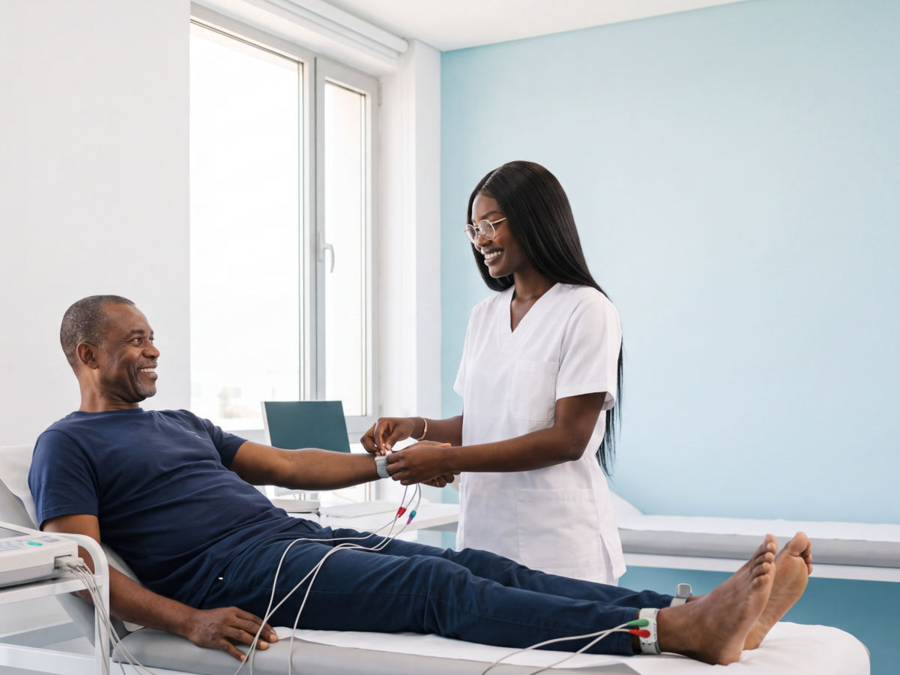

Início › Consultas
Consultas e especialidades
Clínica geral com marcação ou no próprio dia, pediatria, ginecologia e obstetrícia e outras especialidades. Pedimos os exames certos e passamos a receita.
Clínica geral
Consulta de clínica geral
Consulta marcada ou no próprio dia. Pedimos os exames certos, fazemos as análises no nosso laboratório e passamos a receita. A farmácia interna entrega a medicação logo a seguir à consulta.
Enfermagem
Tratamentos de enfermagem
Injecções intramusculares e intravenosas, sinais vitais, curativos e pensos, suturas, nebulização, lavagem nasal e lavagem de ouvido. Sala de observação no mesmo edifício, para tratamentos de 1 a 2 horas.
Pediatria, ginecologia e obstetrícia
Das crianças à gravidez
Pediatria: primeira consulta, puericultura e consultas de rotina. Acompanhamos o crescimento das crianças.
Ginecologia e obstetrícia: consultas de rotina e acompanhamento da gravidez, com as análises da grávida e a ecografia obstétrica no mesmo sítio.
Cardiologia
Consulta de cardiologia
Consulta com cardiologista, por marcação, para o coração e a tensão arterial. Leve os exames que já fez e a lista da medicação que toma.
Os exames do coração fazem-se aqui: electrocardiograma (ECG), Holter de 24 horas, MAPA de 24 horas e ecocardiograma. Ver os exames do coração.

Especialidades
Outras especialidades
Cada médico tem os seus dias de consulta. Escolha a especialidade e indicamos o próximo dia livre.
Medicina geral e familiarAcompanhamento da família, de todas as idades.
Consulta de rotina e seguimento de doenças crónicas, com os exames e as análises no mesmo sítio.
Medicina internaDoenças do adulto.
Diabetes, tensão alta e doenças que tocam vários órgãos ao mesmo tempo.
UrologiaRins, bexiga e próstata.
Consulta de urologia, com ecografia renal e prostática disponível na clínica.
OrtopediaOssos, músculos e articulações.
Dores nas costas e nas articulações, lesões e fracturas, com raio-X na clínica.
DermatologiaPele, cabelo e unhas.
Manchas, alergias, acne e outras queixas da pele.
PsicologiaApoio psicológico.
Consulta e reconsulta de psicologia, para adultos e famílias, com marcação.
NutriçãoAlimentação e peso.
Plano alimentar para perder ou ganhar peso, diabetes, tensão alta, gravidez e crianças.
Quer marcar uma consulta?
Envie-nos o nome, a especialidade e o dia que prefere. A recepção confirma a hora.